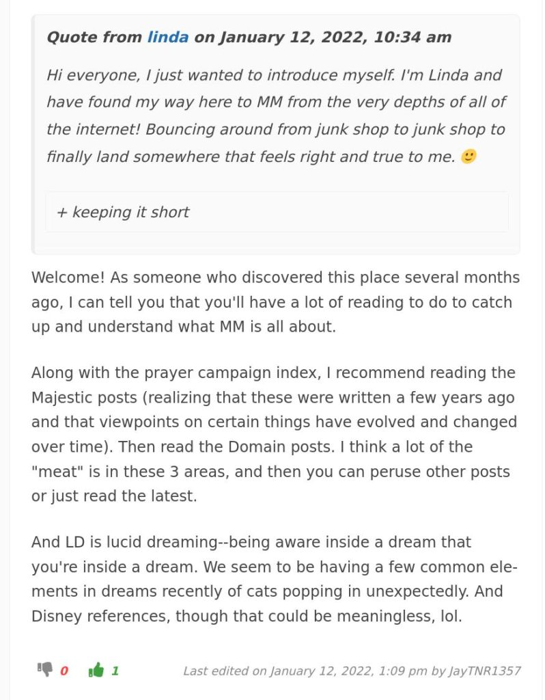
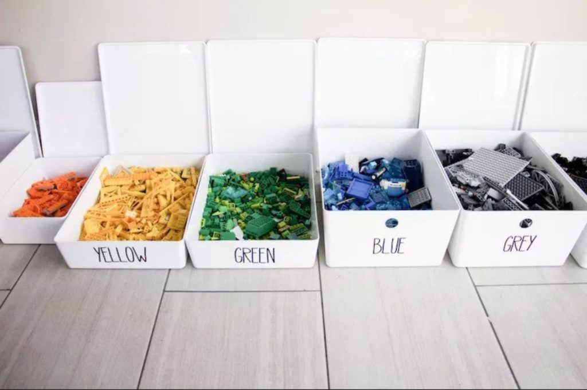

Read This First
The following is an introduction by Prof77 written on 27SEP21.
Big thanks to Prof77! This is brilliant. -MM
What I wish I had known when I first visited Metallicman.com blog
At first I was disappointed.
Why?
I mistakenly expected a well-defined, systematically organized, body of well-established, well-documented writing. I’ve since learned this blog is a non-mainstream, non-comprehensive, work in process.
It hosts posts by the blog’s author, MM, a now retired 40+ year participant in MAJestic, a special access “black projects” program of the US Navy.
He reports and annotates his rather unusual experiences.
Topics include: interactions with alien species, technology transfer, the “many worlds interpretation” of reality, geo-politics/exo-politics, navigating timelines, expanding consciousness, and “things that you’ll not find anywhere else.”
Equally important are comments posted by the blog’s readers, an evolving community who appears to be crowdsourcing an understanding of the reported experiences of the blog’s author.
It’s a wild ride.
First-time visitors to the blog may find themselves in a sort of non-sequential, random walk through thousands of links and posts. Visiting this blog feels like visiting a huge world’s fair, set in a large park, complete with art museums, a large zoo, and many, many wondrous exhibits.
It’s too much to take in all at once.
Just wander around and maybe pause to ponder whatever posts catch your attention.
QED
Instructions
There is a lot here to unpack. I know that it can be confusing and bewildering. I do not want anyone to be confused or lost.
I suggest different starting points depending on your interests.
If You are curious about extraterrestrials, mankind, history, and how MM became to be the “torch-bearer” for this disclosure, then go to the MAJestic Index and start going down the list of articles, one by one.
If you are here because of understanding how the universe actually works, Heaven and Hell, and all of that as well as how your personal life works, then you can visit the World-Line Index here…
If you want to change your life, then you need to start conducting campaigns to do so. This can be resourced out from my Prayer Affirmation Campaign Index here…
If you are tired of being fearful, alone and have enough of the rubbish “news”, and you want to sort your life out, and make it better, then you need to visit the Rufus Index here…
I have tons of interesting subjects. I strongly recommend my OOPART index. Because I break down what these strange items are. If you want to see what science has to say about these strange items, check them out. HERE.
Oh, and my COMM with Domain. If you are interested in the “greys” extraterrestrials, You will want to check out this sub-index HERE.
Oh, I also teach how to build a dimensional teleportation portal, and how to conduct world-line travel as well. Relax and check out the site..
I have written books, and have a patreon and numerous YouTube Channels.
I suggest you go to the TOP LEVEL ACCESS page, and browse from there.
Remember I post every single day. Usually (as of late) it is just musings and some articles of interest. Go HERE to keep current.
Full Index of Indexes…
This is an index of my other indexes. This list is constantly growing. But here is where you start when spelunking through all the many varied articles herein. Many big thanks to the influencers who have organized it for me.
I recommend that you start on one of these indexes and then branch out from there. Feel free to visit the Forum and contribute, place your thoughts in the chat, or lurk. It’s all good. Enjoy.

Why it is organized this way.
Let the picture of Legos illustrate. Here is how many people try to organize things to figure out how things fit and work together…

Here is how MM organizes Legos…
You end up with a better picture about how things fit together.